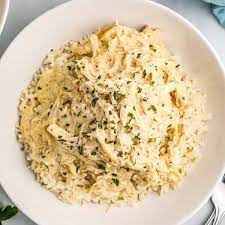

Crockpot Italian Chicken

Crockpot Italian Chicken
You only need 3 ingredients for this crockpot Italian chicken with Italian dressing and Parmesan cheese. Nothing could be easier than this for a weekday meal that's ready when you get home.
Ingredients
- 1 (16 ounce) bottle Italian dressing (such as Olive Garden℠ Signature Italian Dressing)
- 1/4 cup grated Parmesan cheese
- 4 boneless skinless chicken breasts
Steps
- Stir Italian dressing Parmesan cheese together in a bowl.
- Place chicken in a slow cooker, and pour dressing mixture over chicken.Cover and cook on Low until chicken is tender, no longer pink in the center, and the juices run clear, about 8 hours.